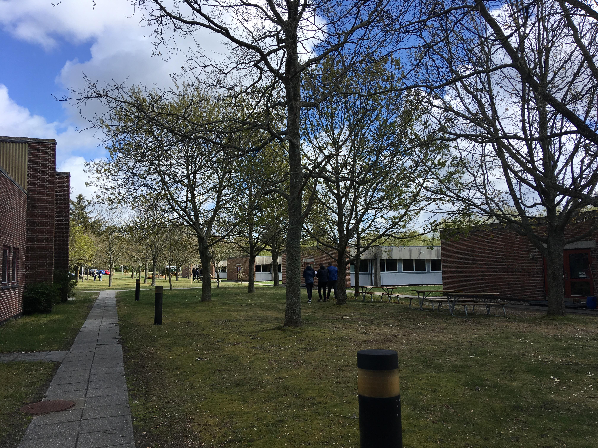
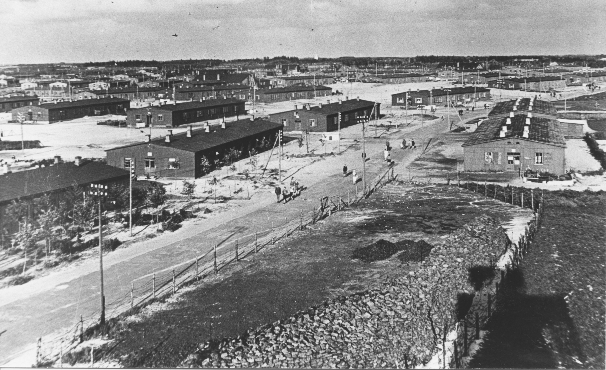
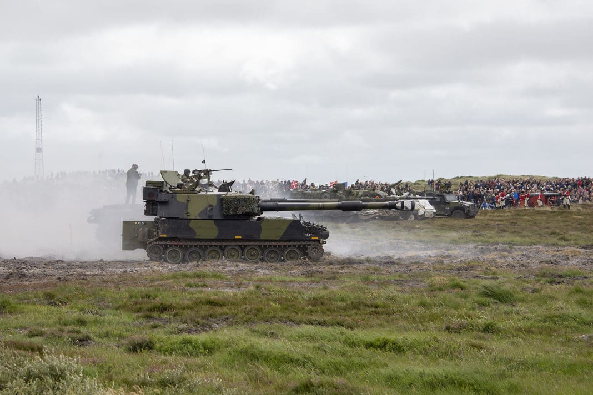

Alle afskedige medarbejdere har plantet et træ i Mindelunden

Oksbøl Kaserne er en dansk militærlejr oprettet i 1929 med navnet Oksbøllejren , opkaldt efter den nærliggende by Oksbøl. Oksbøllejren skiftede 1. januar 2019 navn til Oksbøl Kaserne.
Når en person tager afsked fra regimentet, planter vedkommende et egetræ i Mindelunden. Dette skal minde pårørende om deres tid i regimentet.

Åbent hus på Oksbøl Kaserne 23. Juni 2019.